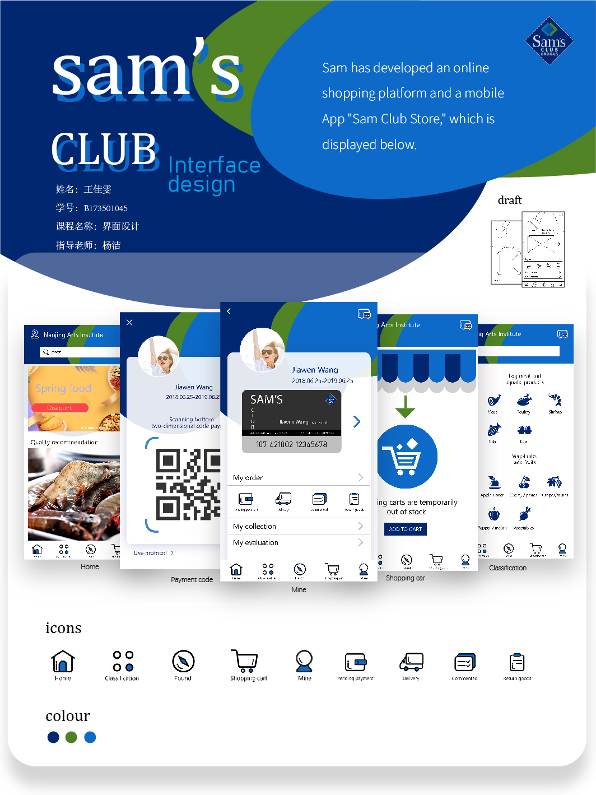

Interface design
This is the second half of sophomore year. It is an app interface design about Sam's membership supermarket. It takes the color of the logo of Sam's membership supermarket as the basic color.

It's a freshman and a half semester course. It's about the design of a lamp. Its name is the singing of birds and the fragrance of flowers. By changing different shades, different themes can be realized.
Integrated design of information products
This is the second half of sophomore year. It is a data display design about the development history of wheels, including historical evolution, manufacturing mode, structure and storyboard.
Interaction conceptual design 
This is the first half of my junior year. It is a kind of public welfare design about the help of vagrants. Through labor points, in exchange for food, clothing, job training opportunities. Determined to help them return to society.